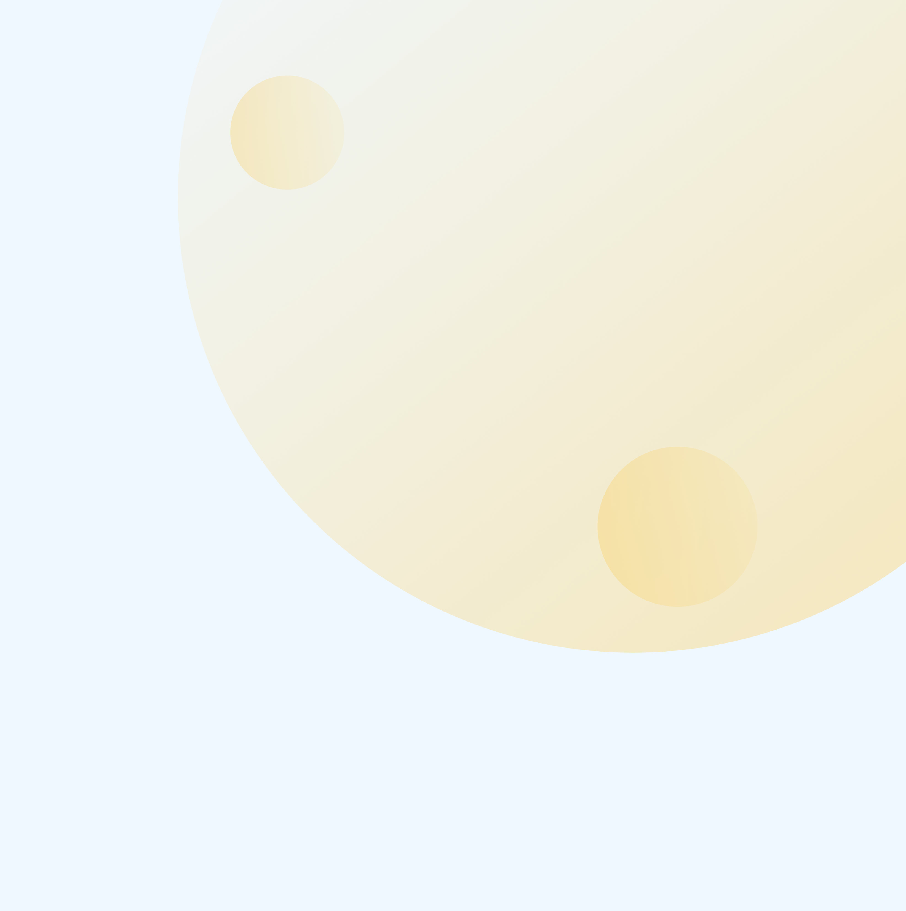
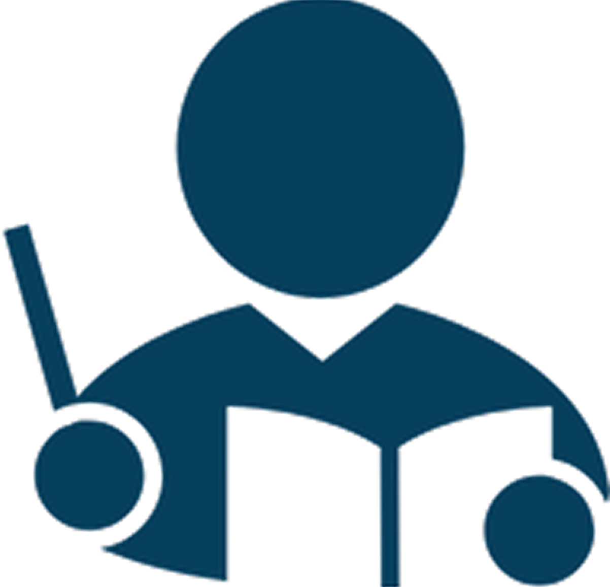
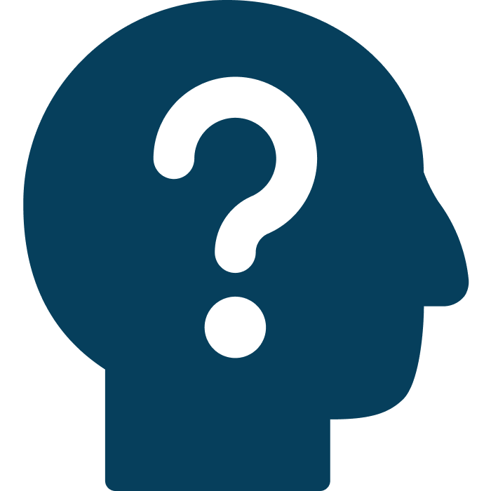
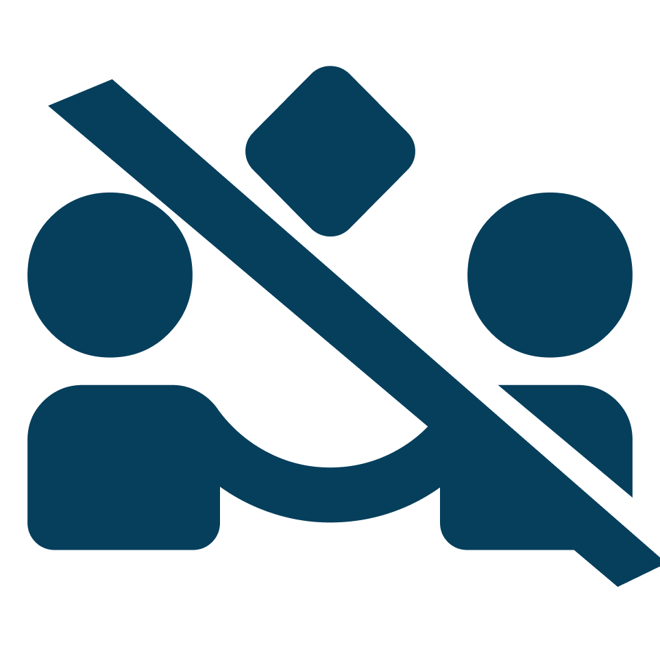
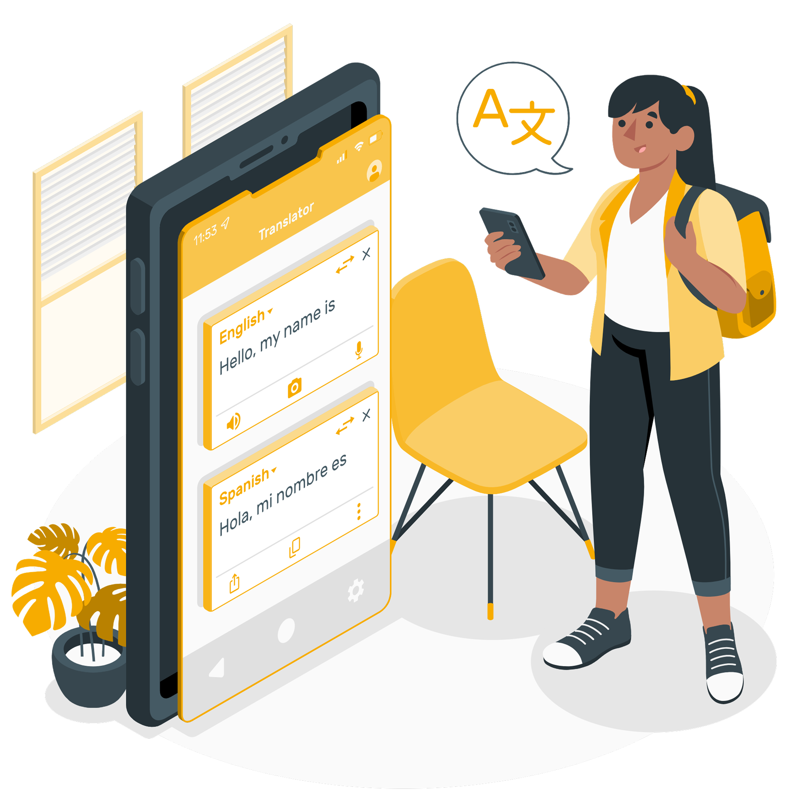
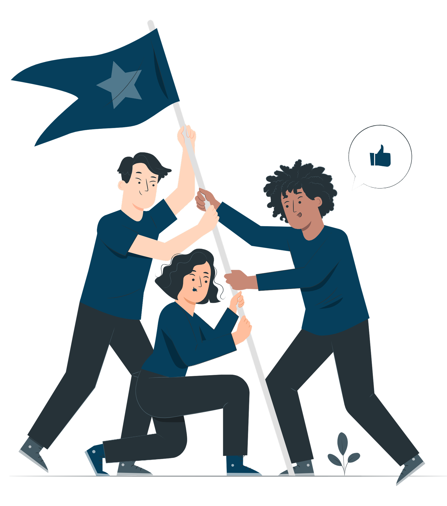

Conecta Libras
O Conecta Libras nasceu da necessidade de tornar a comunicação entre surdos e ouvintes mais simples, prática e acessível. Queremos que qualquer pessoa, independente de suas condições auditivas, tenha as mesmas oportunidades de aprendizado, interação e convivência em sociedade.
Participe da nossa jornada de inclusão
Transcreva fala em Libras, texto em fala ou vice-versa. Nos propomos a auxiliar a comunicação de deficientes auditivos em ambiente escolar e na vida!
Os problemas que buscamos resolver
No Brasil, milhões de pessoas têm algum grau de deficiência auditiva. Apesar da Libras ser reconhecida como a segunda língua oficial do país, muitas vezes a falta de intérpretes ou recursos de acessibilidade ainda limita a participação plena de estudantes e cidadãos surdos.
Dentro das escolas, essa barreira se torna ainda mais evidente:

Professores
Professores encontram desafios em transmitir conteúdos de forma acessível.

Acompanhamento das aulas
Estudantes enfrentam dificuldades em acompanhar aulas expositivas.

Comunicação
A interação entre colegas pode ficar restrita, dificultando a inclusão social.
Nossa solução
O Conecta Libras oferece três recursos principais: converte falas em texto com legendas automáticas, transforma mensagens escritas em voz e traduz conteúdos para Libras em tempo real. Essas funcionalidades tornam a comunicação mais simples e acessível em escolas e em diversas situações do cotidiano.


Quem somos
Somos uma equipe multidisciplinar formada por estudantes comprometidas com inovação e inclusão. Nosso objetivo é construir pontes de comunicação que promovam respeito, igualdade de oportunidades e convivência entre diferentes realidades, criando soluções acessíveis que realmente façam a diferença.
Somos uma equipe multidisciplinar formada por estudantes comprometidas com inovação e inclusão. Nosso objetivo é construir pontes de comunicação que promovam respeito, igualdade de oportunidades e convivência entre diferentes realidades, criando soluções acessíveis que realmente façam a diferença.
A comunidade surda
A comunidade surda é rica em cultura, história e linguagem própria, com a Libras sendo um elemento central que conecta pessoas e fortalece identidades. Apesar das barreiras que ainda existem, a comunidade continua construindo espaços de aprendizado, arte e convivência, mostrando força e resiliência.
Saiba mais
Quer conhecer mais sobre a história, conquistas e desafios da comunidade surda? Descubra na nossa página de Inclusão e veja como a comunicação acessível transforma vidas.